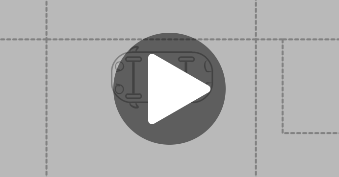
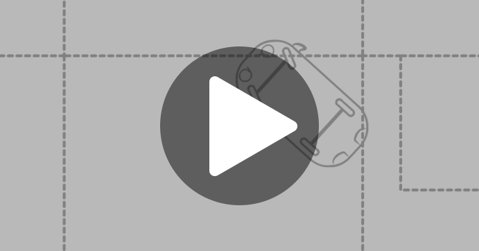
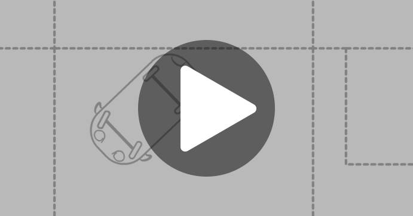

Въезжаем на перекресток. Если на светофоре горит запрещающий движение сигнал (красный, желтый, сочетание красного и желтого, мигающий зеленый), то останавливаемся перед линией СТОП. Ждем включения разрешающего сигнала светофора (зеленого).

Проезжаем перекресток.
Проезд перекрестка прямо. Едем прямо. Руль не поворачиваем.
Поворот направо. Начинаем поворачивать руль направо после того, как середина автомобиля поравняется с линией перекрестка, перпендикулярной нашему автомобилю.
Поворот налево. Когда автомобиль окажется на середине перекрестка, поворачиваем руль налево и выполняем поворот.
